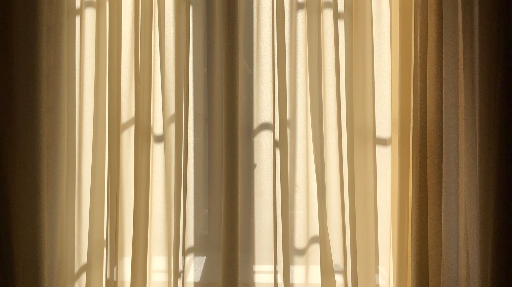
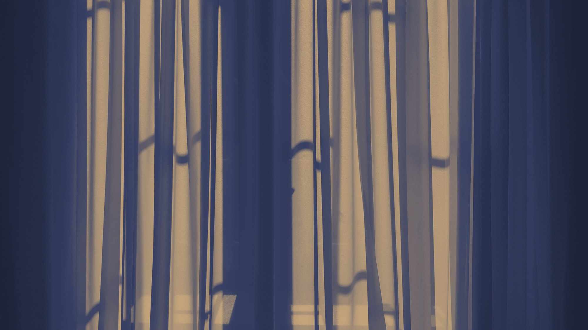

Marie Creation
Interior design · Textil · Varroda
Az otthon minden szála. Függönyvarrás, lakástextil és teljes lakberendezés belsőépítész szemlélettel.
Időpontkérés

Interior design · Textil · Varroda
Az otthon minden szála. Függönyvarrás, lakástextil és teljes lakberendezés belsőépítész szemlélettel.
IdőpontkérésNagy Mariann vagyok, belsőépítész végzettségű lakberendező. Otthonokat és vendégtereket tervezek, és a legtöbb terv nálam a varrodában is folytatódik: a függöny, a párna, a terítő ugyanabból a gondolatból születik, mint az alaprajz.
Ez a különbség a részleteken látszik. A függöny szegélye a bútor színéhez igazodik, a párna anyaga a kanapé arányához, a lámpabúra a fényhez, amit a térbe terveztem. Egy kézben marad minden, ezért nem csúszik szét a végeredmény.
Bővebben rólam


Méretre varrt függönyök, párnák, terítők, kézzel behúzott ráncolással, felméréstől a felszerelésig.

Konyhabútor, fürdőszoba, gyerekszoba és beépített szekrény tervek milliméterre, kivitelezésre készen.

Teljes felújítás egy kézben: világítási és gépészeti terv, kivitelezők, berendezés az átadásig.

Kézzel készített párnák, terítők, makramék és válogatott textilek, otthonába szállítva.


Írjon néhány sort a teréről, és egyeztetünk egy személyes felmérést. Az első beszélgetés kötelezettség nélküli.
Időpontkérés